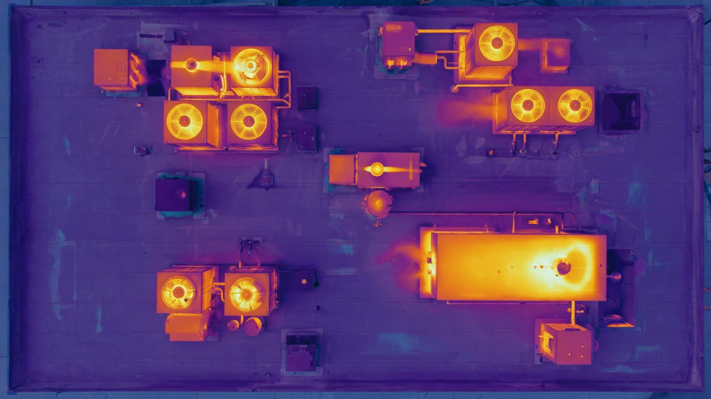

Rooftop AC & HVAC
Overheating compressors, blocked coils, and unit stress across commercial roofs in one aerial pass—less ladder time, clearer priorities.
Thermal · Infrared · New Jersey
See heat you can't see from the ground—rooftop HVAC and AC units, roofs, building envelopes, electrical gear, and claim sites— without ladder roulette across every unit. FAA Part 107. Based in South Jersey; we mobilize for real work.

A thermal camera on a drone is not a gimmick pass. Under the right conditions it shows temperature differences that point crews to compressors running hot, roof wet spots, envelope leakage patterns, outdoor electrical stress, and more—then we package labeled stills so your team can act without sorting hundreds of random JPEGs.
Overheating compressors, blocked coils, and unit stress across commercial roofs in one aerial pass—less ladder time, clearer priorities.
Thermal + visual on flat and pitched roofs for wet-looking zones, insulation gaps, and repair sequencing (not a substitute for invasive testing when required).
Heat loss and air leakage patterns for facilities, owners, and energy work—useful context before deeper IR or blower-door work.
Outdoor transformers, service equipment, and gear that runs hotter than it should—document for follow-up by a licensed electrician.
Storm, fire aftermath, and hard-to-access elevations—RGB standard; thermal when heat or moisture tells the story. Claims partner page →
Hot modules, string patterns, and production-loss context with electrical troubleshooting path. Solar thermal deep-dive →
Site address, goals, RGB vs thermal, access, and timing via form.
Part 107 ops when weather and IR conditions support useful data.
Labeled stills + short findings—not a dump of unsorted files.
Secure link or client portal. Quote path clear before wheels roll.
Heat signatures on rooftop HVAC/AC, roof and moisture clues, building envelope patterns, outdoor electrical hotspots, and claim-site conditions when IR adds value beyond RGB photos.
We’re based in South Jersey (Toms River area). Primary work is NJ and nearby; out-of-area jobs are case-by-case when the trip is worth it.
Yes. Part 107 operations with Airdata safety verification. See the certificate link in the footer.
Use the form below. Include address, what you need (RGB, thermal, or both), access notes, and timing. We reply by email during business hours—no public phone required.
Address + goal is enough to start. We reply with scope notes and a clear quote path—no spam list.